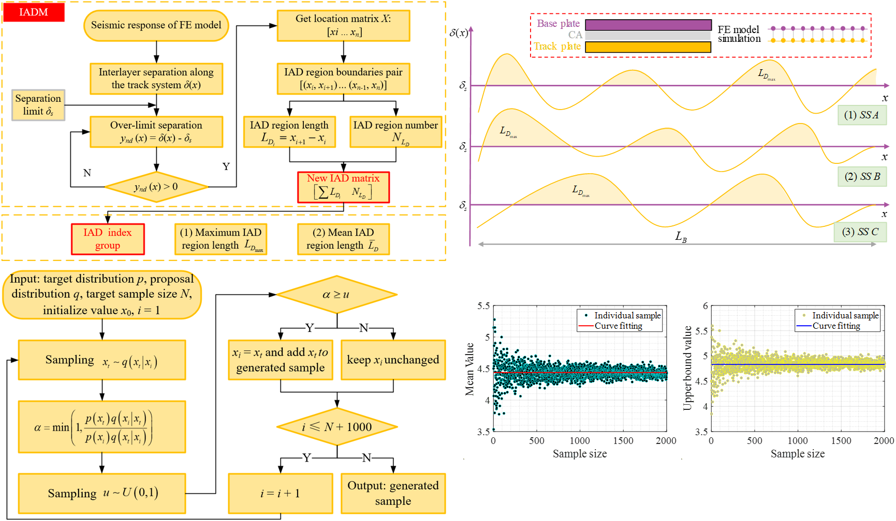
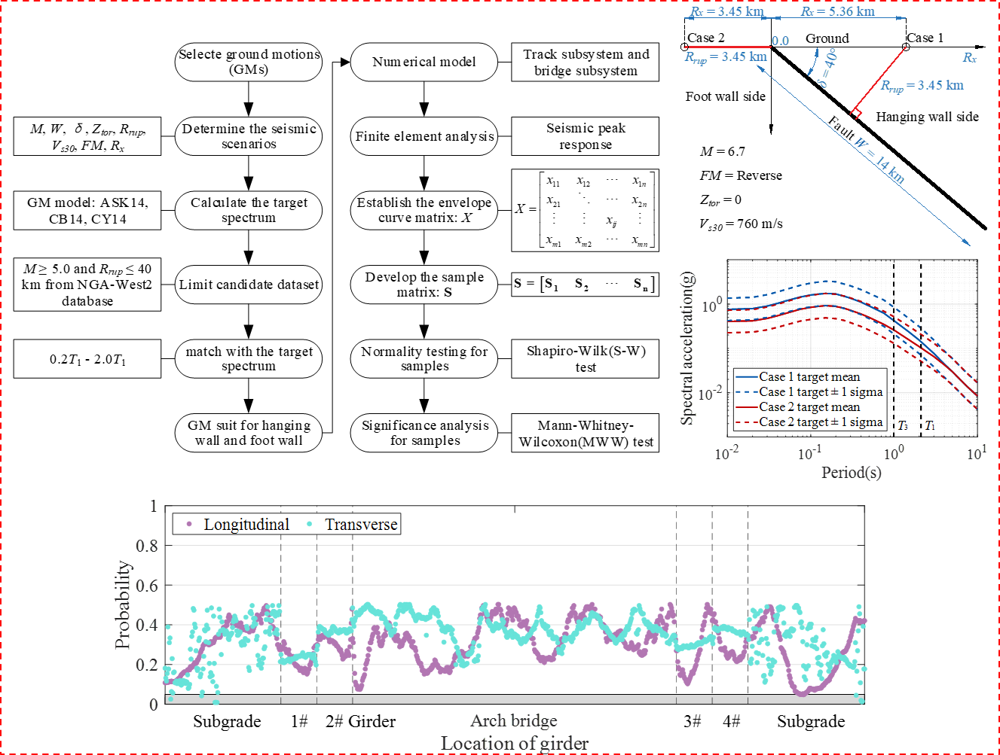
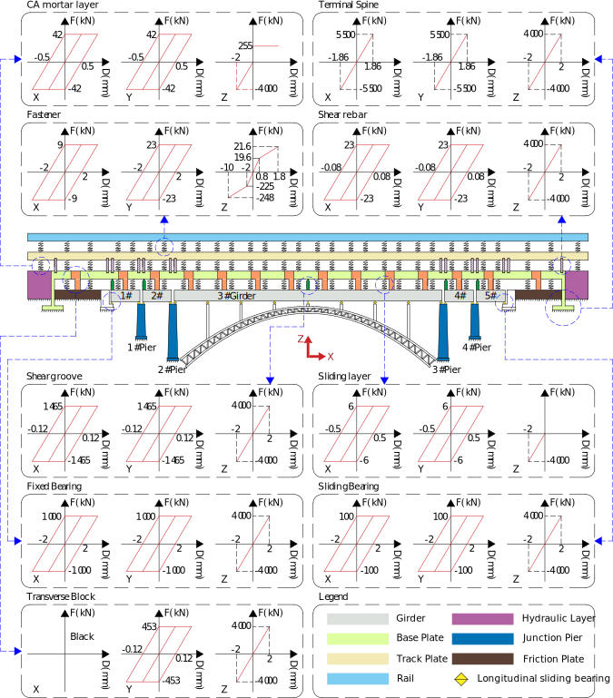
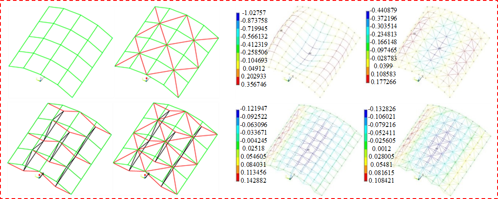

About Myself
I am a second-year graduate scholar affiliated with the High-Speed Railway Engineering Structure Seismic Research Institute at Central South University.
My scholarly interests encompass computer-aided design, seismic analysis, structural engineering, and finite element (FE) simulation.
Presently, my scholarly endeavors are concentrated on investigating the effects of near-fault ground motion characteristics on a high-speed railway long-span steel truss arch bridge-track system.
I commenced my academic journey in civil engineering at Northeast Agricultural University in 2018,
culminating in the acquisition of my Bachelor's degree in Civil Engineering in 2022.
Subsequently, in that same year, I embarked upon my Master's degree studies at Central South University.
I am very fortunate to be advised by Prof. Lizhong Jiang and Prof. Liqiang Jiang.
The Latest Research News [2024.01.06]
The seismic damage of interlayer continuous components in high-speed railway (HSR) bridges has not been effectively evaluated to date. In this paper, an interlayer area damage (IAD) index group was improved. It includes the maximum IAD region length and mean IAD region length. Due to the lower computational efficiency of the HSR bridge model and IAD model (IADM), this study proposes the use of Markov Chain Monte Carlo (MCMC) method for random sampling of small IAD index response sample. Aiming to obtain a stable IAD index response expectation. First, generate sample series of varying sizes by MCMC. Then, calculate the mean and upper bound value for each sample. Finally, perform a polynomial fitting on multiple mean and upper bound values. A Case study on a HSR long-span steel truss arch bridge-track system (HSRLSTABTS) be carried out. A refined numerical model of HSRLSTABTS was established. A ground motion (GM) suite with 30 records was selected for near-fault hanging wall (HW) and foot wall (FW), respectively. For the CA mortar layer of interlayer continuous component, stable response expectations of the IAD indexes were computed under both HW and FW. According to the findings, the stable response expectations for IAD indexes can be used as an effective estimate for seismic damage of CA mortar layer. The realization of this process through MCMC effectively enhances computational efficiency. The HW effect has a maximum impact of 2.96% on the damage of the CA mortar layer when using mean IAD region length as the damage index.

Research News [2023.12.16]
The hanging wall (HW) effect significantly influences the characteristics of near-fault ground motion (GM) and seismic damage of engineering structures. In this paper, a high-speed railway long-span steel truss arch bridge-track system (HSRLSTABTS) was investigated. Firstly, a statistical significance analysis framework of engineering was proposed to evaluate the impact of the HW effect on different structural components longitudinally distributed over the bridge. An envelope curve matrix and a sample matrix were developed. The normality and significance test of samples were conducted. The samples at a specific position along the component response envelope curves retrieved from finite element (FE) analysis were examined by normality and significance analysis. The significance level was set as 0.05. Then, a refined numerical model of HSRLSTABTS was established. A GM suite with 30 records was selected for near-fault HW and foot wall (FW), respectively, matching with the response spectrum predicted by empirical GM models. Finally, these GM suites were applied to the model, accounting for the travelling wave effect of GMs. The results show that the shorter the fundamental period of the structure, the more conspicuous the impact of the HW effect. A non-normal distribution for most samples, resulting in selecting a non-parametric statistical test for significance analysis. The HW effect only exerts a significant impact on the longitudinal displacement of several components, including components at the left abutment, the approach bridge, and the 1/4 section of the arch rib. Including the fixed bearing, sliding bearing, shear rebar, the sliding layer and the CA mortar layer.

Research News [2023.10.20]
High-speed railway long-span bridges are gradually being employed in regions with more intricate topography. A high-speed railway long-span steel truss arch bridge-track system (HSRLSTABTS) were investigated. An elaborate numerical model was established for dynamic structural analysis, including the nonlinear behavior of the track subsystem components. Ground motions were selected and scaled to match the design basis earthquake (DBE) and maximum considered earthquake (MCE) hazard levels in China. Based on the criterion of the upper bound of seismic peak response, a study on estimate of seismic response and damage for the structure under different seismic hazard levels and various seismic excitation directions was carried out. According to the findings, in comparison to the DBE level, most severe damage is incurred by the bearings, shear grooves, and shear rebar at the MCE level. Moreover, under MCE level, there is a noticeable increase in both axial forces and bending moments at the feet of the arch ribs, as well as the axial forces in the steel columns on either side of the arch ribs and the bottom moments of the piers near the arch feet. The shear groove experience complete failure under longitudinal seismic excitation but remain intact under transverse seismic excitation. The axial forces and bending moments of the arch ribs exhibit comparable responses under different seismic excitation directions, while the axial forces in the steel columns and the bottom moments of the piers show greater responses under transverse seismic excitation. The sliding bearing, CA mortar layer, and fastener meet seismic requirement.

Research News [2022.09.18]
The stringer and cable are arranged outside the bidirectional gridded monolayer cylindrical reticulated shell to form a tensioned structure system, which effectively enhances the bearing capacity of the structure. In this paper, the static stability of 40m, 50m and 60m span latticed shells with prestress, vector span ratio, initial defect and cable strength was analyzed.
